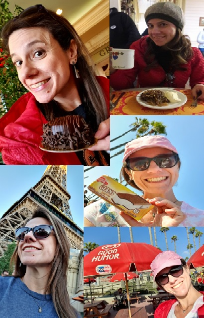

Who I am....👩💻
IT Professional who loves a good conversation, trips and take good times with friends.
My favorite "boost" is coffee + chocolate!!

ITIL | Scrum | COBIT | DevOps | LeanIT | Cloud 🚀
IT Professional who loves a good conversation, trips and take good times with friends.
My favorite "boost" is coffee + chocolate!!